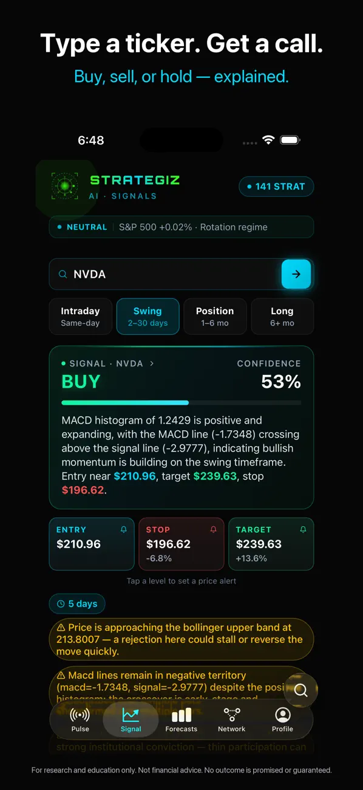
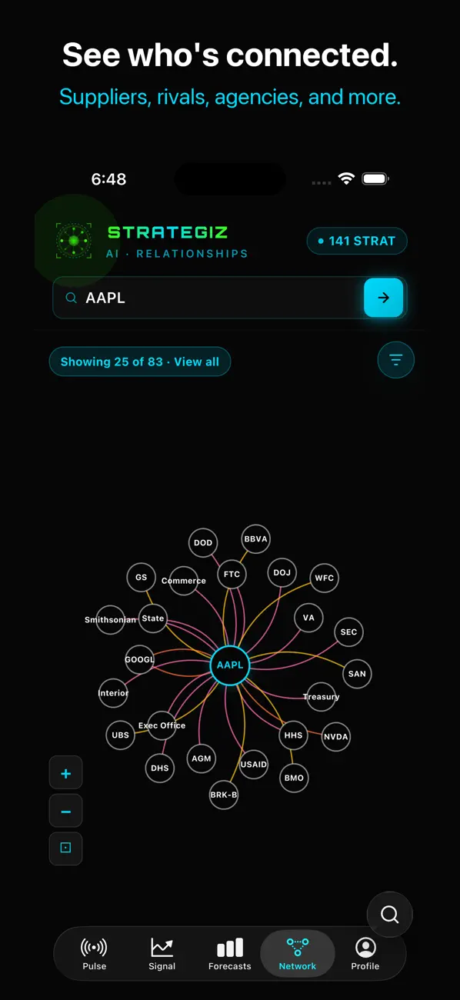
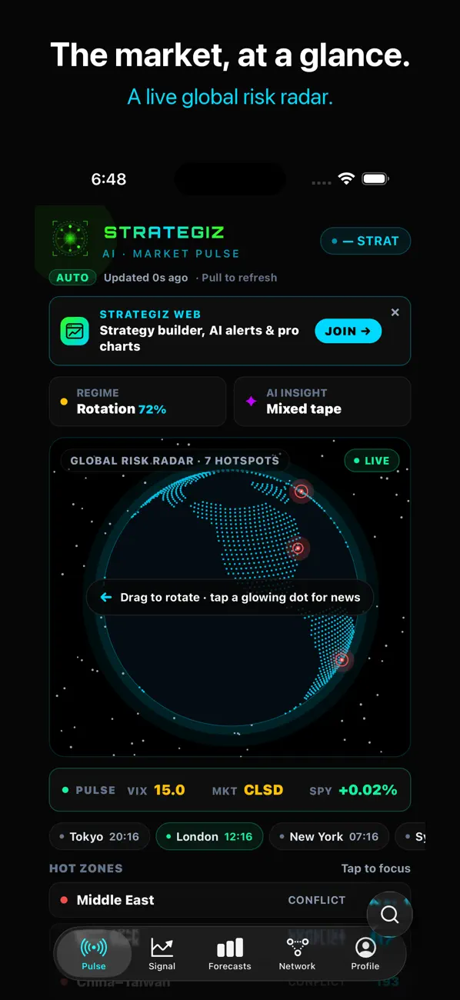
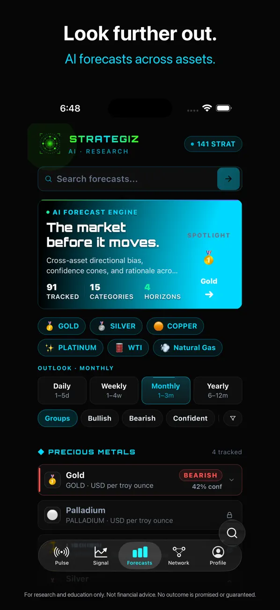

Pluggable framework
Modular Java framework applications with independently scalable, deployable, and replaceable modules — supporting multiple runtime versions and reuse across services.
Inventor · End-to-end engineer · AI product builder
Gabriel Antonio Jimenez is a co-inventor of two granted U.S. patents, a deep Java/Spring architect, and the builder behind a portfolio of AI-powered products — led by Strategiz. More than fifteen years shipping real software across backend, frontend, and full three-tier systems.
Inventions
Two issued U.S. patents naming Gabriel A. Jimenez as a co-inventor, assigned to American Express Travel Related Services Company, Inc. Source: Justia inventor record.
Modular Java framework applications with independently scalable, deployable, and replaceable modules — supporting multiple runtime versions and reuse across services.
JBoss/Java framework for hierarchical IMS database access through IMS Connect and Open Database Manager — bridging distributed applications with mainframe data systems.
Depth
Core strength is systems architecture and Java/Spring — application servers, concurrency, three-tier design, and production databases — with strong working fluency across modern TypeScript stacks and an AI-assisted development workflow. Not a claim of equal expert depth in every language.
Where interviews and system design land hardest.
Also: reactive / functional patterns, FaaS, Jenkins/CD, and modernization from mainframe-adjacent middleware to private cloud / JBoss reference architectures (historical Amex work).
Used to ship current AI products and shared platform pieces.
Public GitHub: github.com/cuztomizer. Product work spans owned orgs with Java backends and TypeScript clients; private internals stay private.
Career
Verifiable chronology spanning 15+ years. Current role: Vice President of Engineering for all customer IAM / authentication (companywide customer scope — not “all security”). Seeking hands-on coding IC work that rewards architecture and product building.
Owns engineering for customer IAM and authentication across the enterprise customer surface. Leadership scope includes a large engineering organization; portfolio emphasis remains on invention, architecture, and product craft rather than title theater.
Architecture leadership across customer-domain platforms — modernization of Customer 360 capabilities and federated third-party data gateway patterns (historical scope).
Directed engineering for customer-domain systems during a multi-year platform era.
Hands-on path through Credit Collections and customer systems: Java/.NET applications, IMS/DB2 access patterns, middleware, private-cloud/JBoss uplift, Azure migration leadership, and continuous delivery with Jenkins/LARA.
Supported a mainframe rule decision engine with a VB.NET GUI and three-tier SQL Server stack used by 300+ global users.
University of Florida IPPD team project with General Dynamics: PLM / process planning with PTC Windchill and semi-generative CAD tooling. Student industry project — not framed as full-time employment.
Portfolio
Self-built product portfolio spanning research, travel, rewards, marketing, and clinic operations. About twelve mobile apps built overall — not twelve App Store releases. Status labels below reflect what is public today.
Investment research platform for self-directed investors — not a brokerage and not trade execution. Type a ticker, get explainable AI buy/sell/hold signals with levels and risk notes; explore company relationship graphs; run Scout screens and Ask Scout in plain English; track forecasts, earnings, and market pulse. Substantial website plus released iOS app (Strategiz LLC).




Tells you which card to use at the merchant in front of you — with the arithmetic visible. Optional Ask AI / voice concierge. No bank linking. Seller: Strategiz LLC.
AI-crafted narrated audio walking tours from place search, with source links and voice/text Q&A. Private iPhone beta; public App Store release not yet available.
Private retirement projection app with on-device Monte Carlo engine and optional AI chat that explains saved plans without changing them. No bank connection. Education, not advice.
AI that runs a brand’s marketing loop — strategy, content, and publishing — with human approval before anything goes out. Early TestFlight; no public App Store listing found.
Multi-agent software-building system — plain-language idea to plan approval to working software. Public repos under tacticl-ai; prior TestFlight build removed.
Substantial dental practice app designed to replace the front-desk role. Specific task automation scope still being documented; public domain ownership remains unconfirmed, so no product-domain link is published here. Public clickable prototype available on GitHub.
Foundation
Nova Southeastern University · 2011–2018 · summa cum laude
University of Florida · 2004–2009 · cum laude · minor in Sales Engineering
Platinum (Jan 2019, Jan 2018), Gold (Jan 2018), Genius Medal (Jan 2015) — indexed from public LinkedIn.
Crypto enthusiast who previously built personal cryptocurrency mining rigs — hands-on hardware curiosity, not a claim of blockchain protocol expertise or investment performance.
Connect
Prefer LinkedIn for professional contact. GitHub for public engineering signal and open projects. No contact form on this site — keep it simple and private.
Positioning: inventor + end-to-end engineer + AI product builder. Looking for coding IC roles that value architecture and shipped product depth — not pure people-management or security-leadership tracks.
gabrieljimenez.io